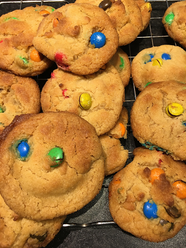

Smartie Cookies

Makes 11
Ingredients
- 100g of butter, softened
- 100g of light muscovado sugar
- 1 tbsp of golden syrup
- 150 self raising flour
- 85g of smarties (around 3 tubes) M&Ms work just as well
Method
- Preheat the oven to 180 degrees
- Beat the butter and sugar in a bowl until light and creamy then beat in the syrup. This can be done with a whisk or a spoon
- Work in half the flour. Do this with a spoon
- Stir in the smarties with the remaining of the flour
- Work the dough together with your fingers
- Divide them into 11 balls and place them far apart on trays
- Do not flatten them and bake them for 9/10 minutes until pale golden at the edges. They cook very quickly at the end
- Leave them on the trays for 2 minutes so they can cool down a bit before transferring them, otherwise they will disintegrate.
- Cool on a wire rack